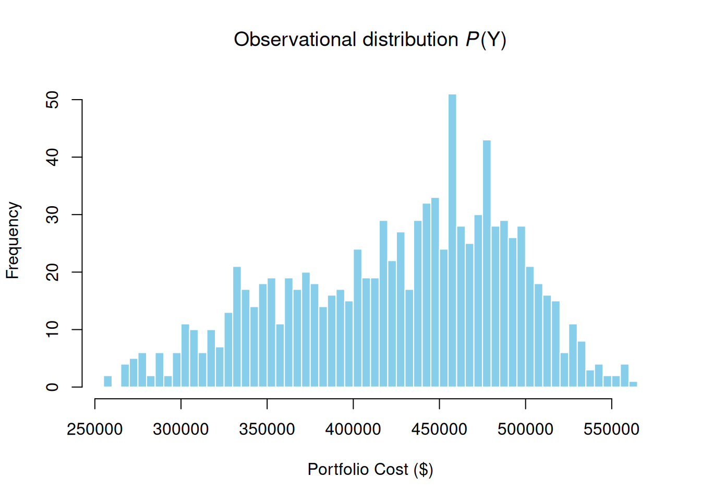
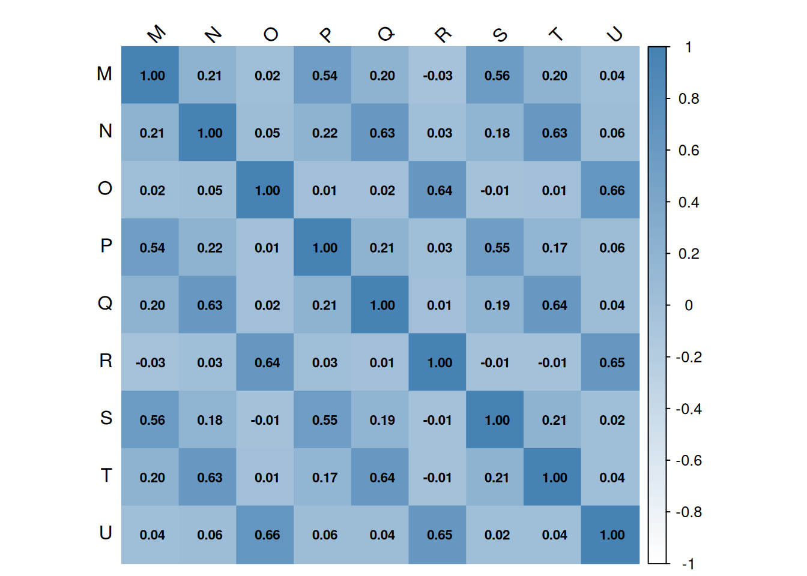
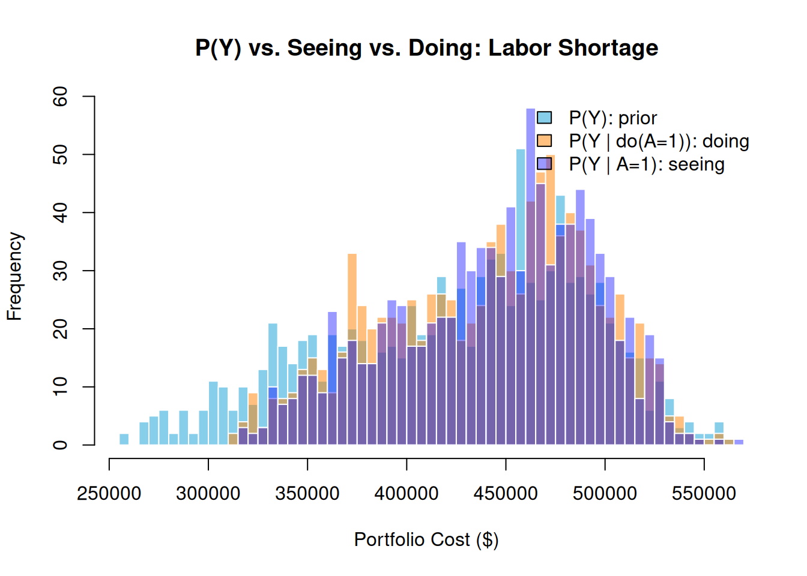
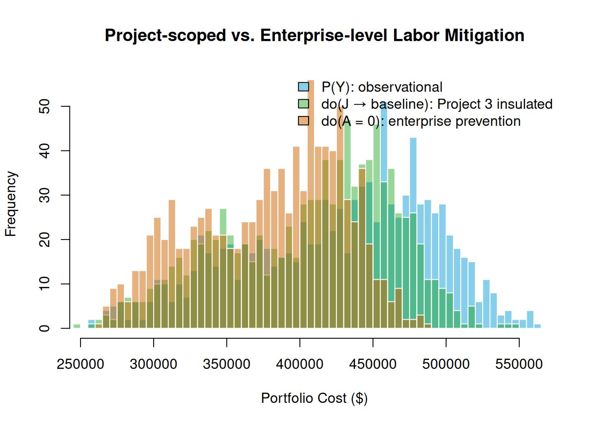
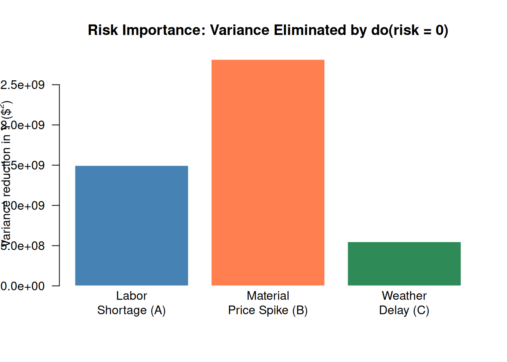

library(PRA)
library(igraph)
library(networkD3)
library(corrplot)
set.seed(42)10 The Portfolio Problem: When Risks Are Shared
“Seeing a fire is not the same as starting one.” — The First Law of Causal Inference
In Chapter 9, we built a probabilistic network for one project. Now we’re going to scale up to a portfolio of three projects, introduce an upstream root cause, and answer the question that keeps enterprise risk managers up at night: when one project gets hit by a risk, what happens to all the others?
The answer depends on whether the risks are truly independent or whether they share a common driver. And it depends on something subtle but important: the difference between seeing a risk happen and doing something to prevent it. These two things look similar but behave completely differently in a causal network.
10.1 The Portfolio Case Study
Consider an enterprise running three projects simultaneously: a Road Repair, a Park Construction, and a Building Renovation. Each project has three tasks driven by three resources — labor, materials, and equipment.
Critically, these resources are shared at the enterprise level: the same labor pool, the same material suppliers, and the same equipment fleet serve all three projects. Three enterprise-wide risk events propagate through the corresponding shared resource to impact all three projects simultaneously.
Even more critically, two of these risks — a Labor Shortage and a Material Price Spike — share a common upstream driver: a Supply Chain Disruption that simultaneously tightens the labor market and raises commodity prices. This shared root cause is what makes the distinction between seeing and doing consequential (Pearl 2009; Govan 2014).
WarningSeeing Is Not the Same as Doing
Seeing \(A = 1\) (observing a Labor Shortage) conditions on the evidence in the original graph. Bayes’ rule propagates upstream: it raises the posterior probability of the Supply Chain Disruption, which in turn raises the probability of the Material Price Spike. A side-effect flows through the shared root cause.
Doing \(\text{do}(A = 1)\) (intervening to cause a Labor Shortage) severs the SC → A edge via graph surgery. SC stays at its prior, B stays near its prior, and material costs are unaffected. Only labor costs change.
The gap between the two distributions — seeing vs. doing — is the operational signature of the shared root cause SC. Confusing the two leads to systematically underestimating portfolio cost exposure (Pearl 2009).
10.2 Setup
10.2.1 Tasks
| ID | Label | Task |
|---|---|---|
| M | Task-1.1 | Site Preparation |
| N | Task-1.2 | Road Paving |
| O | Task-1.3 | Final Inspection |
| ID | Label | Task |
|---|---|---|
| P | Task-2.1 | Site Preparation |
| Q | Task-2.2 | Planting and Landscaping |
| R | Task-2.3 | Final Inspection |
| ID | Label | Task |
|---|---|---|
| S | Task-3.1 | Demolition |
| T | Task-3.2 | Renovation and Build-Out |
| U | Task-3.3 | Final Inspection |
10.2.2 Risks and Root Cause
root_cause <- data.frame(
ID = "SC", Event = "Supply Chain Disruption", P_occurs = 0.70,
Children = "A (Labor Shortage), B (Material Price Spike)"
)
risks <- data.frame(
Risk_ID = c("A", "B", "C"),
Risk = c("Labor Shortage", "Material Price Spike", "Weather Delay"),
Parent = c("SC", "SC", "—"),
P_marginal = c("≈ 0.79", "≈ 0.67", "0.60"),
Resource_Impacted = c("Labor (D,G,J)", "Materials (E,H,K)", "Equipment (F,I,L)")
)
knitr::kable(root_cause, caption = "Root Cause (SC)")| ID | Event | P_occurs | Children |
|---|---|---|---|
| SC | Supply Chain Disruption | 0.7 | A (Labor Shortage), B (Material Price Spike) |
knitr::kable(risks, caption = "Enterprise Risks")| Risk_ID | Risk | Parent | P_marginal | Resource_Impacted |
|---|---|---|---|---|
| A | Labor Shortage | SC | ≈ 0.79 | Labor (D,G,J) |
| B | Material Price Spike | SC | ≈ 0.67 | Materials (E,H,K) |
| C | Weather Delay | — | 0.60 | Equipment (F,I,L) |
The shared root cause SC is what makes seeing and doing diverge: observing \(A = 1\) raises the posterior probability of SC, which in turn raises the probability of \(B = 1\) — a side-effect that \(\text{do}(A = 1)\) does not produce.
10.3 Building the Portfolio Network
nodes <- data.frame(
id = c("SC","A","B","C","D","E","F","G","H","I","J","K","L",
"M","N","O","P","Q","R","S","T","U","V","W","X","Y"),
label = c(
"Supply Chain Disruption",
"Risk-1 (Labor Shortage)","Risk-2 (Material Price Spike)","Risk-3 (Weather Delay)",
"Labor-1","Materials-1","Equipment-1",
"Labor-2","Materials-2","Equipment-2",
"Labor-3","Materials-3","Equipment-3",
"Task-1.1","Task-1.2","Task-1.3",
"Task-2.1","Task-2.2","Task-2.3",
"Task-3.1","Task-3.2","Task-3.3",
"Project 1","Project 2","Project 3","Portfolio"
),
group = c(
"Root Cause","Risk","Risk","Risk",
"Resource","Resource","Resource","Resource","Resource","Resource",
"Resource","Resource","Resource",
"Task","Task","Task","Task","Task","Task","Task","Task","Task",
"Project","Project","Project","Portfolio"
),
stringsAsFactors = FALSE
)
links <- data.frame(
source = c(
"SC","SC",
"A","A","A","B","B","B","C","C","C",
"D","E","F","G","H","I","J","K","L",
"M","N","O","P","Q","R","S","T","U",
"V","W","X"
),
target = c(
"A","B",
"D","G","J","E","H","K","F","I","L",
"M","N","O","P","Q","R","S","T","U",
"V","V","V","W","W","W","X","X","X",
"Y","Y","Y"
),
value = rep(1, 32)
)
distributions <- list(
SC = list(type = "discrete", values = c(1, 0), probs = c(0.7, 0.3)),
A = list(type = "conditional", condition = "SC",
true_dist = list(type = "discrete", values = c(1, 0), probs = c(0.95, 0.05)),
false_dist = list(type = "discrete", values = c(1, 0), probs = c(0.40, 0.60))),
B = list(type = "conditional", condition = "SC",
true_dist = list(type = "discrete", values = c(1, 0), probs = c(0.85, 0.15)),
false_dist = list(type = "discrete", values = c(1, 0), probs = c(0.25, 0.75))),
C = list(type = "discrete", values = c(1, 0), probs = c(0.6, 0.4)),
D = list(type = "conditional", condition = "A",
true_dist = list(type = "normal", mean = 50000, sd = 8000),
false_dist = list(type = "normal", mean = 30000, sd = 5000)),
G = list(type = "conditional", condition = "A",
true_dist = list(type = "normal", mean = 40000, sd = 6000),
false_dist = list(type = "normal", mean = 25000, sd = 4000)),
J = list(type = "conditional", condition = "A",
true_dist = list(type = "normal", mean = 65000, sd = 10000),
false_dist = list(type = "normal", mean = 40000, sd = 6000)),
E = list(type = "conditional", condition = "B",
true_dist = list(type = "normal", mean = 80000, sd = 12000),
false_dist = list(type = "normal", mean = 50000, sd = 8000)),
H = list(type = "conditional", condition = "B",
true_dist = list(type = "normal", mean = 50000, sd = 8000),
false_dist = list(type = "normal", mean = 30000, sd = 5000)),
K = list(type = "conditional", condition = "B",
true_dist = list(type = "normal", mean = 100000, sd = 15000),
false_dist = list(type = "normal", mean = 60000, sd = 10000)),
F = list(type = "conditional", condition = "C",
true_dist = list(type = "normal", mean = 35000, sd = 6000),
false_dist = list(type = "normal", mean = 20000, sd = 4000)),
I = list(type = "conditional", condition = "C",
true_dist = list(type = "normal", mean = 25000, sd = 4000),
false_dist = list(type = "normal", mean = 15000, sd = 3000)),
L = list(type = "conditional", condition = "C",
true_dist = list(type = "normal", mean = 40000, sd = 6000),
false_dist = list(type = "normal", mean = 25000, sd = 4000)),
M = list(type = "aggregate", nodes = "D"),
N = list(type = "aggregate", nodes = "E"),
O = list(type = "aggregate", nodes = "F"),
P = list(type = "aggregate", nodes = "G"),
Q = list(type = "aggregate", nodes = "H"),
R = list(type = "aggregate", nodes = "I"),
S = list(type = "aggregate", nodes = "J"),
T = list(type = "aggregate", nodes = "K"),
U = list(type = "aggregate", nodes = "L"),
V = list(type = "aggregate", nodes = c("M","N","O")),
W = list(type = "aggregate", nodes = c("P","Q","R")),
X = list(type = "aggregate", nodes = c("S","T","U")),
Y = list(type = "aggregate", nodes = c("V","W","X"))
)
graph <- prob_net(nodes, links, distributions = distributions)10.4 Observational Distribution
The observational distribution \(P(Y)\) reflects the full uncertainty of all three shared risks.
sim_results <- prob_net_sim(graph, num_samples = 1000)hist(sim_results$Y, breaks = 50,
main = expression("Observational distribution " * italic(P) * "(Y)"),
xlab = "Portfolio Cost ($)", col = "skyblue", border = "white")
10.4.1 Task-Cost Correlation Matrix
The correlation matrix reveals which tasks are coupled through shared risks.
task_costs <- sim_results[, c("M","N","O","P","Q","R","S","T","U")]
cor_matrix <- cor(task_costs)
corrplot(cor_matrix,
method = "color", type = "full",
addCoef.col = "black", number.cex = 0.7,
tl.col = "black", tl.srt = 45,
col = colorRampPalette(c("white", "steelblue"))(100),
mar = c(0, 0, 1, 0))
10.5 Seeing vs. Doing at the Risk Level
This is where the real insight lives. Seeing \(A = 1\) conditions on the observation in the original graph — evidence propagates upstream as well as downstream. Doing \(\text{do}(A = 1)\) performs graph surgery, severing SC→A and fixing \(A = 1\). The two operations produce different results because of the shared root cause SC.
seeing_results <- prob_net_learn(graph, observations = list(A = 1), num_samples = 1000)
do_A1_graph <- prob_net_update(graph,
remove_links = data.frame(source = "SC", target = "A", stringsAsFactors = FALSE),
update_distributions = list(A = list(type = "discrete", values = c(1, 0), probs = c(1, 0)))
)
do_A1_results <- prob_net_sim(do_A1_graph, num_samples = 1000)h1 <- hist(sim_results$Y, breaks = 50, plot = FALSE)
h2 <- hist(seeing_results$Y, breaks = 50, plot = FALSE)
h_do <- hist(do_A1_results$Y, breaks = 50, plot = FALSE)
plot(h1, main = "P(Y) vs. Seeing vs. Doing — Labor Shortage",
xlab = "Portfolio Cost ($)", col = "skyblue", border = "white",
ylim = c(0, max(h1$counts, h2$counts, h_do$counts)))
plot(h_do, col = rgb(1, 0.5, 0, 0.5), border = "white", add = TRUE)
plot(h2, col = rgb(0, 0, 1, 0.4), border = "white", add = TRUE)
legend("topright",
legend = c("P(Y) — prior",
"P(Y | do(A=1)) — doing",
"P(Y | A=1) — seeing"),
fill = c("skyblue", rgb(1, 0.5, 0, 0.5), rgb(0, 0, 1, 0.4)), bty = "n")
The key distinction: Seeing a Labor Shortage raises our belief that a Supply Chain Disruption is underway, which in turn raises the probability of a Material Price Spike — a side-effect that propagates through SC. Doing \(\text{do}(A = 1)\) severs SC→A, so SC stays at its prior and material costs are unaffected. The gap between the two distributions is the operational signature of the shared root cause.
10.6 Enterprise vs. Project-Scoped Intervention
Two intervention strategies can reduce labor-risk exposure:
- Project-scoped: Secure a dedicated crew for Building Renovation only (\(\text{do}(J \to \text{baseline})\))
- Enterprise prevention: Eliminate the Labor Shortage entirely (\(\text{do}(A = 0)\))
do_J_graph <- prob_net_update(graph,
remove_links = data.frame(source = "A", target = "J", stringsAsFactors = FALSE),
update_distributions = list(J = list(type = "normal", mean = 40000, sd = 6000))
)
do_J_results <- prob_net_sim(do_J_graph, num_samples = 1000)
do_A0_graph <- prob_net_update(graph,
remove_links = data.frame(source = "SC", target = "A", stringsAsFactors = FALSE),
update_distributions = list(A = list(type = "discrete", values = c(1, 0), probs = c(0, 1)))
)
do_A0_results <- prob_net_sim(do_A0_graph, num_samples = 1000)h3 <- hist(do_J_results$Y, breaks = 50, plot = FALSE)
h4 <- hist(do_A0_results$Y, breaks = 50, plot = FALSE)
plot(h1, main = "Project-scoped vs. Enterprise-level Labor Mitigation",
xlab = "Portfolio Cost ($)", col = "skyblue", border = "white",
ylim = c(0, max(h1$counts, h3$counts, h4$counts)))
plot(h3, col = rgb(0, 0.6, 0, 0.4), border = "white", add = TRUE)
plot(h4, col = rgb(0.8, 0.4, 0, 0.5), border = "white", add = TRUE)
legend("topright",
legend = c("P(Y) — observational",
"do(J → baseline) — Project 3 insulated",
"do(A = 0) — enterprise prevention"),
fill = c("skyblue", rgb(0, 0.6, 0, 0.4), rgb(0.8, 0.4, 0, 0.5)), bty = "n")
10.7 Risk Importance Ranking
Which shared risk contributes most to portfolio cost variance? Run three enterprise-prevention interventions and measure the variance reduction each produces.
prevent_risk <- function(graph, parent_node, risk_node) {
remove_df <- if (!is.null(parent_node))
data.frame(source = parent_node, target = risk_node, stringsAsFactors = FALSE)
else
data.frame(source = character(0), target = character(0), stringsAsFactors = FALSE)
prob_net_update(graph,
remove_links = remove_df,
update_distributions = setNames(
list(list(type = "discrete", values = c(1, 0), probs = c(0, 1))),
risk_node
)
)
}
g_A0 <- prevent_risk(graph, "SC", "A")
g_B0 <- prevent_risk(graph, "SC", "B")
g_C0 <- prevent_risk(graph, NULL, "C")
r_A0 <- prob_net_sim(g_A0, num_samples = 1000)
r_B0 <- prob_net_sim(g_B0, num_samples = 1000)
r_C0 <- prob_net_sim(g_C0, num_samples = 1000)
var_base <- var(sim_results$Y)
importance <- c(
"Labor\nShortage (A)" = var_base - var(r_A0$Y),
"Material\nPrice Spike (B)" = var_base - var(r_B0$Y),
"Weather\nDelay (C)" = var_base - var(r_C0$Y)
)
barplot(importance,
main = "Risk Importance: Variance Eliminated by do(risk = 0)",
ylab = expression("Variance reduction in Y ($"^2 * ")"),
col = c("steelblue", "coral", "seagreen"),
border = "white", las = 1
)
The bar heights rank the three enterprise risks by their contribution to portfolio cost variance — a principled basis for prioritizing mitigation investments.
10.8 Summary Table
make_stats <- function(x) c(round(mean(x)/1000, 1), round(sd(x)/1000, 1),
round(quantile(x, 0.95)/1000, 1))
stats_mat <- rbind(
make_stats(sim_results$Y),
make_stats(seeing_results$Y),
make_stats(do_A1_results$Y),
make_stats(do_J_results$Y),
make_stats(do_A0_results$Y)
)
stats_df <- as.data.frame(stats_mat)
colnames(stats_df) <- c("Mean ($000)", "SD ($000)", "95th Pct ($000)")
rownames(stats_df) <- c(
"Observational P(Y)",
"Seeing P(Y | A = 1)",
"Doing do(A = 1)",
"Doing do(J → baseline) [Project 3]",
"Doing do(A = 0) [Enterprise prevention]"
)
knitr::kable(stats_df, caption = "Portfolio cost statistics across all scenarios.")| Mean ($000) | SD ($000) | 95th Pct ($000) | |
|---|---|---|---|
| Observational P(Y) | 425.9 | 65.0 | 516.7 |
| Seeing P(Y | A = 1) | 438.6 | 52.9 | 515.6 |
| Doing do(A = 1) | 438.7 | 52.3 | 514.4 |
| Doing do(J → baseline) [Project 3] | 409.0 | 57.1 | 486.5 |
| Doing do(A = 0) [Enterprise prevention] | 377.5 | 52.1 | 452.4 |
10.9 Summary
10.10 Exercises
Seeing vs. doing. In your own words, explain why \(P(Y \mid A = 1) \neq P(Y \mid \text{do}(A = 1))\) in this model. What structural feature of the network causes the difference? What would have to change in the graph for the two to be equal?
Risk importance. In the risk importance ranking, which enterprise risk had the largest effect on portfolio variance? What is it about that risk’s position in the network that makes it particularly impactful?
Two risks confirmed. Run
prob_net_learn(graph, observations = list(A = 1, B = 1), num_samples = 1000). How does the portfolio cost distribution compare to seeing only \(A = 1\)? Is the combined effect larger or smaller than you’d expect from adding the individual effects?Add a fourth project. ★ Extend the network with a fourth project (e.g., a Bridge Inspection) with three tasks and three resources (Labor-4, Materials-4, Equipment-4), driven by the same three enterprise risks A, B, C. Add it to the portfolio node Y. How does total portfolio variance change? Does the risk importance ranking shift?
Causal graph design. ★ In the current model, Supply Chain Disruption (SC) drives both Labor Shortage (A) and Material Price Spike (B). Suppose you learn that, in practice, SC also affects Weather Delay (C) through disrupted logistics. Add an SC → C edge and update the C distribution to be conditional on SC. How does this change the see-versus-do analysis for C?